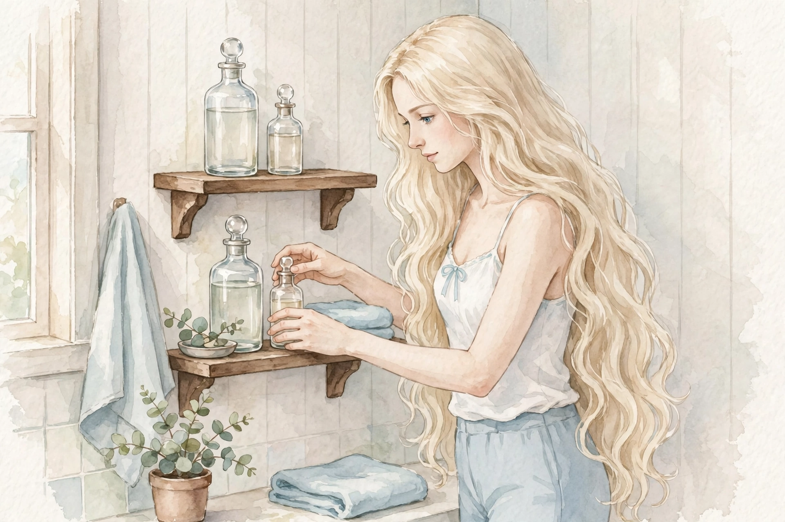

トップ ＞ ボディケア ＞ 子どもと分けるボディケアの表示確認
子どもと分けるボディケアの表示確認

家族で暮らしていると、ボディケアアイテムを「家族みんなで同じもの」にするか、「大人と子どもで分ける」か、という場面が出てきます。この記事では、医学的な判断の話ではなく、表示の確認と、家庭での分け方の段取りに絞って整理します。分け方の正解は家庭ごとに違いますが、判断の材料は表示の中にあります。
表示には、対象や注意が書かれている
アイテムのパッケージには、「お子様の手の届かない場所に保管する」「お子様の使用については保護者の指導のもとで」といった注意書きが書かれていることがあります。また、子ども向けに作られたアイテムには、対象の目安が表示されているものもあります。
まず確認したいのは、そのアイテムが「誰に向けて作られたものか」です。大人向けのアイテムには、大人の使用を前提にした成分や香りの設計があります。表示の対象と注意書きを読むことが、家庭での分け方を決める材料になります。香りの強さや、粒のある洗浄料かどうかなども、大人と子どもで分けるかどうかを考える材料です。棚にある家族のアイテムを一度並べて、表示を読み比べてみると、分け方の基準が作りやすくなります。
分ける場合は、置き場所も分ける
大人用と子ども用を分けることにしたら、置き場所も分けておくと、取り違えが減ります。浴室では棚の段を分ける、洗面所では容器の色や形で見分けがつくようにする、といった工夫です。子どもが自分で手に取る年齢の場合は、手の届く場所に置くものを、家族で決めておきます。
共有するものがある場合も、「これは家族共用」「これは大人専用」という区別を、家族の中で言葉にして共有しておくことが大切です。ポンプの押し方や使う量も、子どもと一緒に確認しておくと、使いすぎや出しすぎが減ります。容器に目印のシールを貼るなど、言葉だけでなく見た目でも分かる工夫を加えると、小さい子どもにも伝わります。旅行や帰省のときも、分け方の基準が決まっていれば、持っていくものを迷わず選べます。
肌の状態は、大人も子どもも個別に見る
家族でも、肌の感じ方は一人ひとり違います。新しいアイテムを使い始めるときは、大人も子どもも、少量から様子を見る進め方が基本です。子どもに気になる状態が出た場合は、自己判断でケアを続けず、小児科や皮膚科などの医療機関にご相談ください。
分けるかどうかは、家庭の方針で決めることです。その判断の材料として、表示の対象と注意書きがあります。棚の前で一度、家族のアイテムの表示を読み比べてみることをおすすめします。
この記事は、表示の確認と家庭での管理の一般的な案内です。子どもの肌や健康についての判断は、医療機関にご相談ください。
入浴の場面では、洗う順番と合わせて、誰のものを誰が使うかを決めておきます。子どもが自分で洗う練習をする時期は、大人のものと間違えないよう、容器の置き場所と見分け方が、そのまま教材になります。家庭のルールを、入浴の手順と一緒に伝えることができます。
外出先や旅行先でも、分け方の基準は同じです。ポーチを分ける、目印をつける、といった工夫は、そのまま持ち運びの場面でも使えます。祖父母の家など、別の家庭に預ける場合は、使うものの範囲をメモで伝えておくと、受け取る側も迷いません。
子どもの成長に合わせて、分け方も見直します。対象の表示を読み直す機会を、節目ごとに作っておくことが、家庭の管理の続け方です。分け方は、家族の成長と一緒に変わっていくものとして、ゆるやかに見直していけば十分です。表示を読む習慣は、家族全員の安心につながります。

セラフィナ「分けるなら、置き場所も分ける。表示の対象チェックから始めよう」

セラフィナ｜美容の道具箱の案内役
「量と表示が分かれば、美容は失敗しない。」——セラフィナと白猫のモコが、買う前のチェックポイントを案内します。綺麗になりたい気持ちに正直に、でも表示は冷静に読むのが、このサイトの約束です。